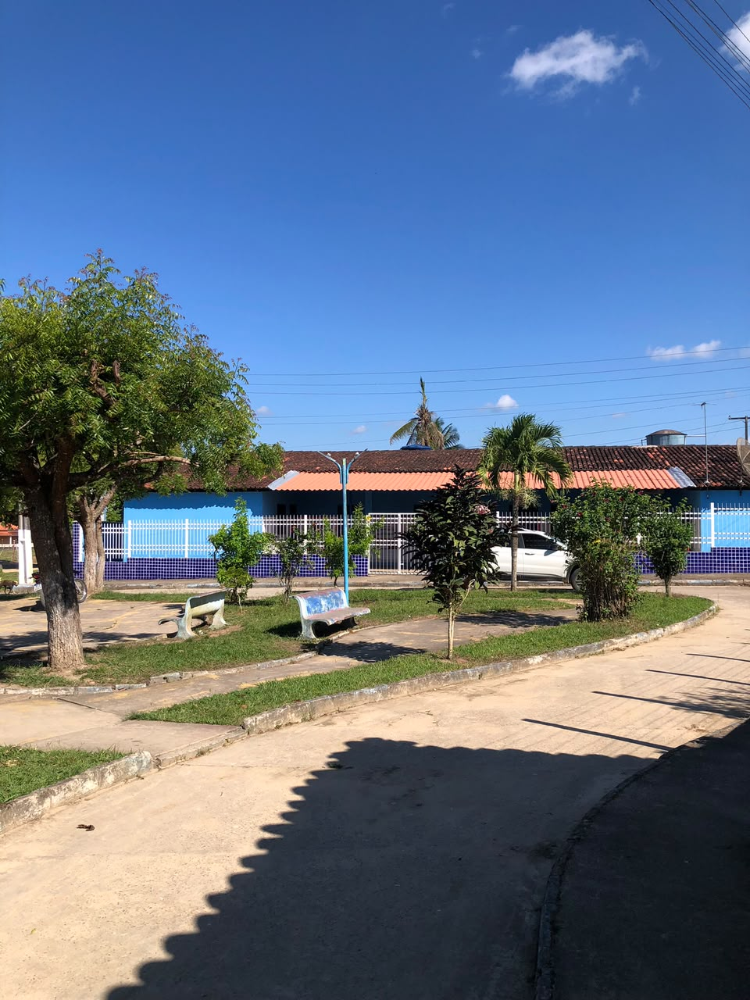
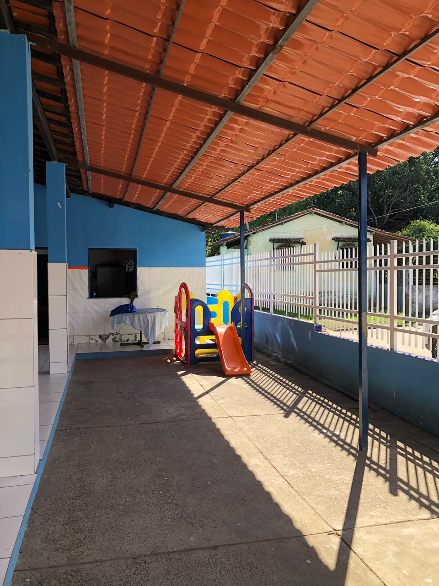
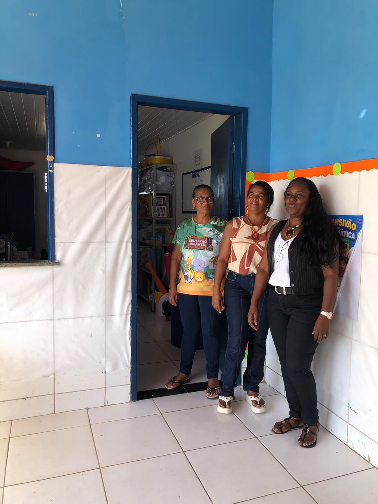
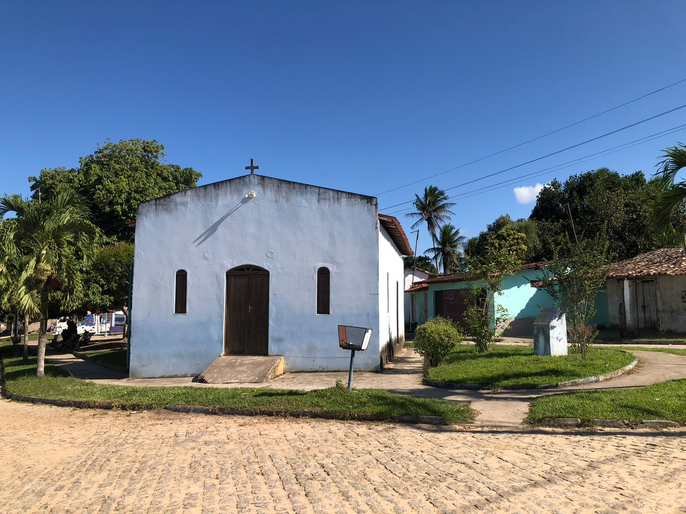
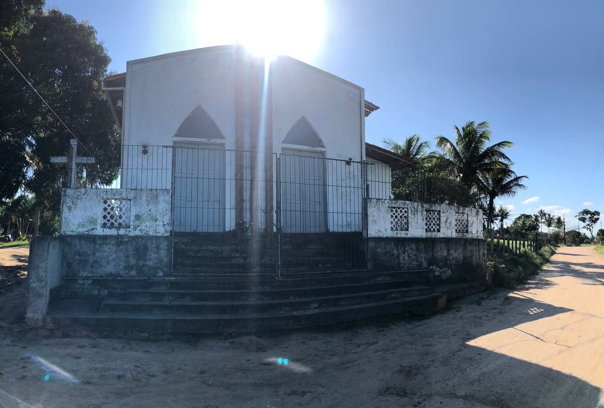
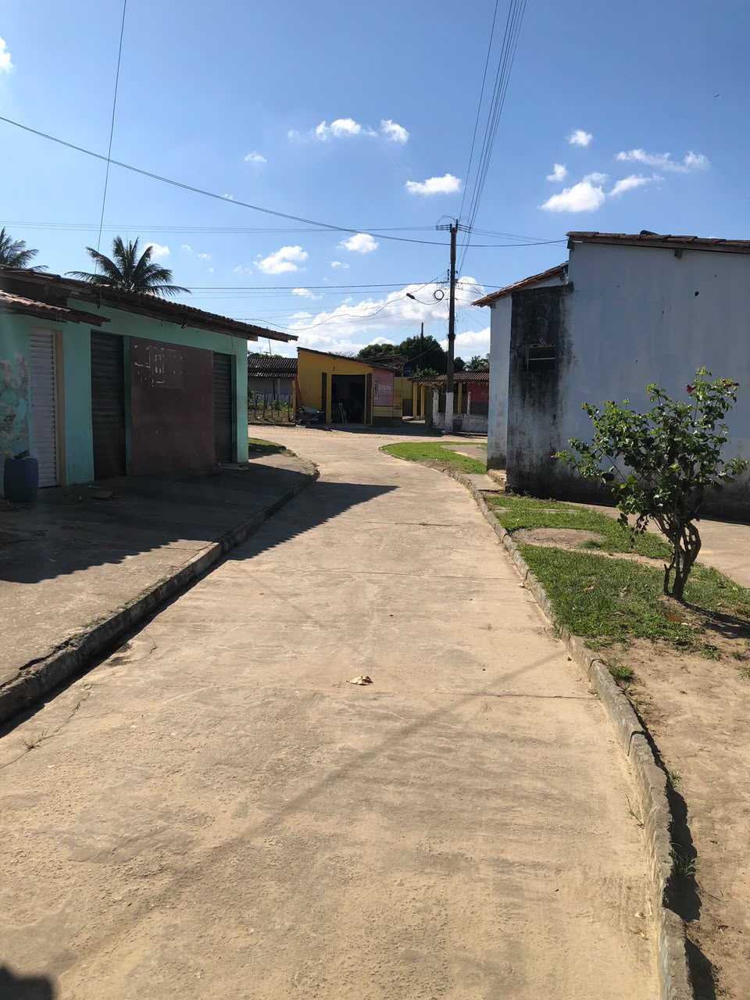

Praça e escola
A proximidade entre praça e escola abre questões sobre circulação, encontros, brincadeiras, eventos e a relação entre a instituição escolar e a vida cotidiana da comunidade.

Uma primeira aproximação à comunidade a partir da escola, dos espaços religiosos, das ruas e das pessoas indicadas para as próximas entrevistas.
Nesta primeira visita à Baixinha da Pindobeira, percorremos parte da comunidade, registramos a escola, duas igrejas e alguns espaços da paisagem local. A visita também permitiu identificar professoras da escola e dois moradores que poderão colaborar com a pesquisa por meio de entrevistas. As informações reunidas nesta etapa são preliminares e deverão ser aprofundadas nas próximas idas a campo.
A escola aparece desde a primeira visita não apenas como um prédio ou ponto de referência, mas como um lugar estratégico para compreender a comunidade, suas memórias e suas redes de conhecimento.

As professoras identificadas durante a visita podem ajudar a reconstruir transformações da escola, relações entre gerações, trajetórias de estudantes e professores, festas, práticas educativas e vínculos entre a instituição e a vida comunitária.
A escola também poderá funcionar como espaço de aproximação com estudantes e famílias, permitindo localizar fotografias, documentos, histórias de vida e outros sujeitos que conheçam a trajetória da Baixinha da Pindobeira.

Durante a visita, a equipe identificou professoras que poderão ser entrevistadas nas próximas etapas. Antes da publicação de seus nomes e depoimentos, a pesquisa deverá registrar as entrevistas e as respectivas autorizações.
Os espaços registrados ajudam a organizar novas perguntas sobre sociabilidade, religiosidade, educação e usos do território.
A proximidade entre praça e escola abre questões sobre circulação, encontros, brincadeiras, eventos e a relação entre a instituição escolar e a vida cotidiana da comunidade.

Uma das duas igrejas registradas na visita. Ainda queremos investigar sua história, denominação, festas, usos e relações com os moradores.

A presença de mais de um espaço religioso convida a pesquisar formas de pertencimento, trajetórias religiosas, festas e possíveis mudanças na paisagem devocional da comunidade.

O percurso pelas ruas permite observar formas de ocupação, circulação e organização do espaço. Nas próximas visitas, essas imagens poderão ser comparadas a relatos e fotografias antigas.
Durante a visita surgiu a informação sobre uma festa tradicional realizada no final de dezembro. Neste momento, ela é tratada como uma pista de pesquisa, ainda sem uma narrativa fechada.
A pesquisa deverá identificar o nome da festa, sua história, quem a organiza, quais espaços ocupa, quem participa, quais práticas religiosas ou festivas estão associadas a ela e como moradores de diferentes gerações se lembram de suas transformações.
Desde quando a festa acontece? Quem são seus organizadores? Há procissão, novena, música, comida, encontros familiares ou outras práticas? A festa reúne pessoas de outras comunidades? Existem fotografias, objetos, cartazes ou lembranças guardadas pelos moradores?
A primeira visita já permitiu indicar pessoas que podem ajudar a transformar reconhecimento territorial em pesquisa histórica.
Podem contribuir com memórias da instituição, trajetórias escolares, relações com famílias, festas, mudanças na comunidade e identificação de antigos estudantes, professores e documentos.
Foram identificados dois moradores que poderão falar sobre a comunidade em entrevistas futuras. Seus nomes e trajetórias só serão apresentados no site depois que as entrevistas forem realizadas e autorizadas.
A página separa registros efetivamente produzidos pela equipe das questões que ainda dependem de pesquisa oral e documental.
A comunidade já foi visitada. A equipe registrou a escola, uma praça, duas igrejas e ruas da localidade. Foram identificadas professoras e dois moradores como possíveis interlocutores. Também surgiu uma informação preliminar sobre uma festa tradicional realizada no final de dezembro.
História da comunidade; trajetória da escola; experiências de estudantes e professoras; história das igrejas; festa de dezembro; fotografias antigas; trajetórias de mulheres; trabalho e saberes locais; memórias de moradores; relações com outras comunidades de Conceição da Feira.
As próximas visitas poderão transformar essas pistas em entrevistas, fontes, trajetórias e narrativas documentadas.
As professoras já aparecem como possíveis interlocutoras. A pesquisa deverá também identificar outras mulheres cujas trajetórias ajudem a compreender trabalho, família, educação, religiosidade e participação comunitária.
As primeiras entrevistas poderão ser feitas com professoras e moradores indicados durante a visita.
A escola e as famílias poderão ajudar a localizar fotografias, documentos escolares, objetos relacionados a festas e outros materiais da história local.
Os registros desta visita formam o primeiro conjunto fotográfico da página da Baixinha da Pindobeira.
Primeira visita: reconhecimento dos espaços, visita à escola, registro de duas igrejas e da paisagem, identificação de possíveis entrevistados e levantamento de uma festa de dezembro como pista de pesquisa.